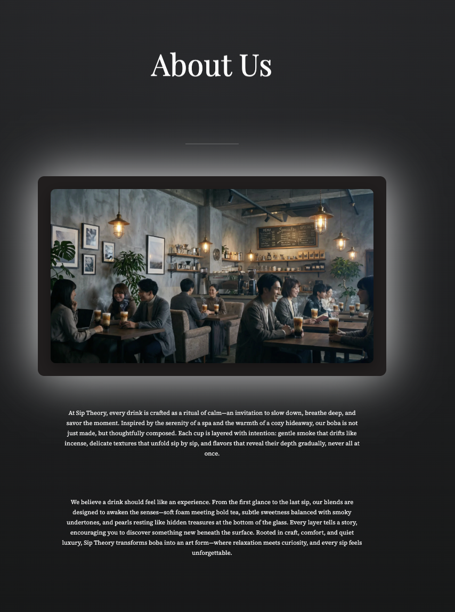
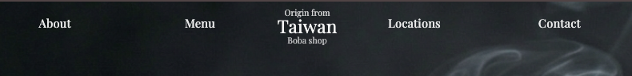
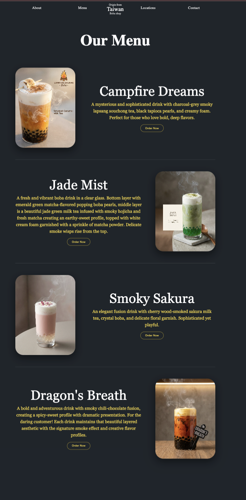
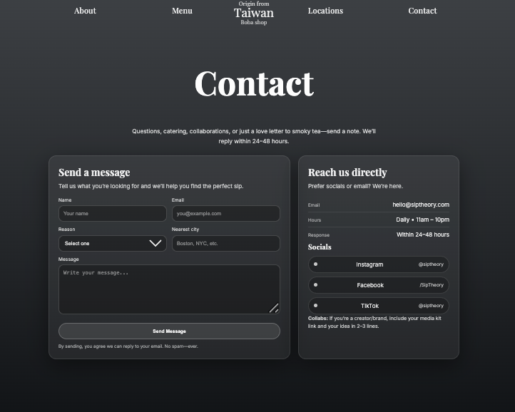

Problem
Most boba sites are overwhelming, bright, and transactional.
Sip Theory
Sip Theory reimagines boba ordering as a slow, immersive ritual. Instead of clutter and urgency, the design reduces cognitive load and encourages intentional browsing.
Link to SipTheory
Project Overview
Most boba websites feel cluttered, high-energy, and transactional. Sip Theory was designed to reduce cognitive overload and create a calmer, more premium browsing experience.
Most boba sites are overwhelming, bright, and transactional.
The interface should reflect the calm and sensory feel of the drink itself.
A slower, story-led layout instead of a rushed product grid.
Create a smoother, more intentional, and more premium user journey.
Layout Thinking
I chose a vertical storytelling structure to slow users down. Instead of encouraging quick scanning, the experience reveals the brand more gradually, making the interface feel closer to the ritual of drinking tea.
“Browsing should feel like sipping slowly.”
UX Features
Each feature was designed to reduce cognitive overload and make browsing feel calmer, more focused, and more intentional.
I used a layered vertical flow so users move through the brand in sequence instead of rushing through crowded information.


The navigation stays limited and clear so users can orient themselves quickly without too many competing options.

The menu feels curated rather than crowded, which helps users focus on one featured drink at a time.

The locations page uses hierarchy through the map and store cards so users can scan information more easily.

The contact section keeps interaction simple, approachable, and visually consistent with the rest of the site.

Smoke, depth, and cinematic lighting work as interface cues to communicate calm, quality, and ritual.